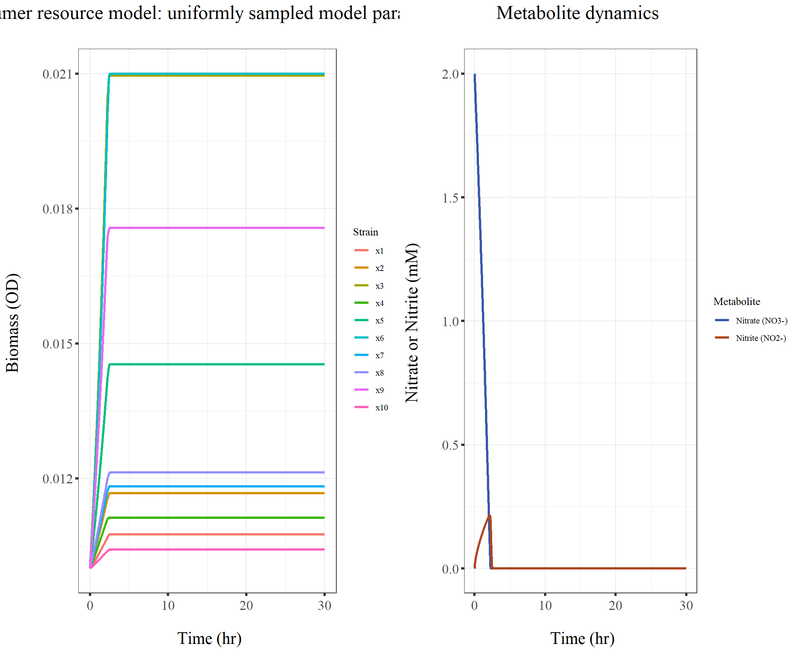
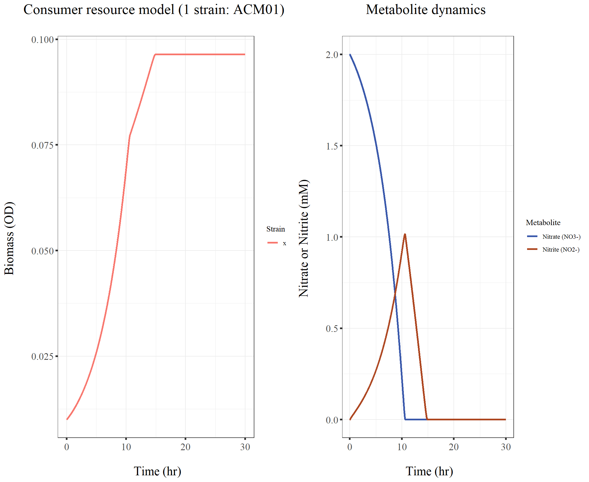
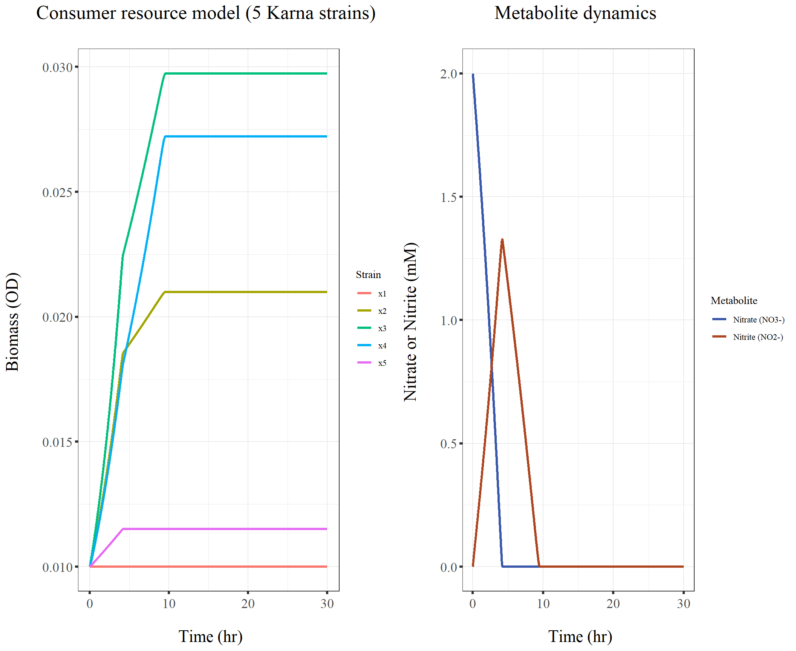

220207_pH_simulation_1st_trial
KiseokLee
2022-02-07
Last updated: 2022-02-07
Checks: 7 0
Knit directory: Denit_simulation/
This reproducible R Markdown analysis was created with workflowr (version 1.6.2). The Checks tab describes the reproducibility checks that were applied when the results were created. The Past versions tab lists the development history.
Great! Since the R Markdown file has been committed to the Git repository, you know the exact version of the code that produced these results.
Great job! The global environment was empty. Objects defined in the global environment can affect the analysis in your R Markdown file in unknown ways. For reproduciblity it’s best to always run the code in an empty environment.
The command set.seed(20220207) was run prior to running the code in the R Markdown file. Setting a seed ensures that any results that rely on randomness, e.g. subsampling or permutations, are reproducible.
Great job! Recording the operating system, R version, and package versions is critical for reproducibility.
Nice! There were no cached chunks for this analysis, so you can be confident that you successfully produced the results during this run.
Great job! Using relative paths to the files within your workflowr project makes it easier to run your code on other machines.
Great! You are using Git for version control. Tracking code development and connecting the code version to the results is critical for reproducibility.
The results in this page were generated with repository version c4b6f8b. See the Past versions tab to see a history of the changes made to the R Markdown and HTML files.
Note that you need to be careful to ensure that all relevant files for the analysis have been committed to Git prior to generating the results (you can use wflow_publish or wflow_git_commit). workflowr only checks the R Markdown file, but you know if there are other scripts or data files that it depends on. Below is the status of the Git repository when the results were generated:
Ignored files:
Ignored: .Rproj.user/
Untracked files:
Untracked: data/consumer_resource_parameters_ADM.csv
Untracked: data/consumer_resource_parameters_SDM.csv
Untracked: tutorial_coupled_odes.pdf
Note that any generated files, e.g. HTML, png, CSS, etc., are not included in this status report because it is ok for generated content to have uncommitted changes.
These are the previous versions of the repository in which changes were made to the R Markdown (analysis/220207_pH_simulation_1st_trial.Rmd) and HTML (docs/220207_pH_simulation_1st_trial.html) files. If you’ve configured a remote Git repository (see ?wflow_git_remote), click on the hyperlinks in the table below to view the files as they were in that past version.
| File | Version | Author | Date | Message |
|---|---|---|---|---|
| Rmd | c4b6f8b | KiseokLee | 2022-02-07 | wflow_publish(“analysis/220207_pH_simulation_1st_trial.Rmd”) |
220207 Denitrification and pH perturbation simulation first trial
Name: Kiseok Lee
Date: 2/7/22
Lab: Seppe Kuehn lab
1. Setting up
1.1. First let’s set up the consumer resource model dynamics
## Consumer resource model
#' @param x cell biomass (OD)
#' @param I nitrite concentration (mM)
#' @param A nitrate concentration (mM)
#' @param gamI biomass yields from nitrite (OD/mM)
#' @param gamA biomass yields from nitrate (OD/mM)
#' @param rI reduction rate of nitrite ((mM/OD)/h)
#' @param rA reduction rate of nitrate ((mM/OD)/h)
#' @param kI half velocity constant of nitrate reduction (mM)
#' @param kA half velocity constant of nitrate reduction (mM)
# set up the Consumer Resource model
# ode
crGrowth <- function(t, state, parameters) {
with(as.list(c(state, parameters)), {
# biomass
dx <- (gamA * rA * (A/(kA + A)) +
gamI * rI * (I/(kI + I))) * x
# nitrate
dA <- -rA * (A/(kA + A)) * x
# nitrite
dI <- (rA * (A/(kA + A)) - rI * (I/(kI +
I))) * x
list(c(dx, dA, dI))
}) # end with(as.list ...
}
parameters <- c(gamI = 0.01, rI = 1.6, gamA = 0.01,
rA = 3.1, kI = 0.01, kA = 0.01)
parameters <- c(gamI = 1, rI = 1, gamA = 1,
rA = 1, kI = 1, kA = 1)
state <- c(x = 2, A = 2, I = 0)
times <- seq(0, 10, by = 1)
outc <- ode(state, times, crGrowth, parameters,
method = "lsoda", atol = 1e-04, rtol = 1e-04)
outc time x A I
1 0 2.000000 2.000000e+00 0.000000e+00
2 1 4.530518 4.314895e-01 6.065030e-01
3 2 5.971205 2.634032e-03 2.352718e-02
4 3 5.999901 5.141715e-06 8.889920e-05
5 4 6.000003 -1.521840e-07 -2.807206e-06
6 5 6.000001 -4.045027e-08 -8.435248e-07
7 6 6.000000 -5.779288e-09 -1.255200e-07
8 7 6.000000 -8.256193e-10 -1.863979e-08
9 8 6.000000 -1.179472e-10 -2.764095e-09
10 9 6.000000 -1.684985e-11 -4.093402e-10
11 10 6.000000 -2.407158e-12 -6.054445e-11plot(outc, xlab = "time", ylab = "-")
plot(outc, xlab = "Time (hr)", ylab = c("Biomass (OD)",
"Nitrite (mM)", "Nitrate (mM)"), col = "black",
type = "l", lty = 1, pch = 19, lwd = 1,
main = "Consumer Resource model")

1.2. Enable many strains (community level dynamics)
# set up the Consumer Resource model
# ode
parameters = list(gamI = c(0.01, 0.02), rI = c(1.6,
1.5), gamA = c(0.01, 0.02), rA = c(3.1,
3.2), kI = c(0.01, 0.02), kA = c(0.01,
0.02))
state = list(x = c(2, 3), A = 2, I = 0)
crGrowth <- function(t, state, parameters) {
with(as.list(c(state, parameters)), {
dx <- (gamA * rA * (A/(kA + A)) +
gamI * rI * (I/(kI + I))) * x
print(paste0("dx: ", dx))
# nitrate
dA <- -rA * (A/(kA + A)) * x
print(paste0("dA: ", dA))
# nitrite
dI <- (rA * (A/(kA + A)) - rI * (I/(kI +
I))) * x
print(paste0("dI: ", dI))
# print(paste0('return sum(dI):
# ', sum(dI)))
# print(paste0('Please return
# the values in the same order
# as state variable'))
list(c(dx, sum(dA), sum(dI)))
}) # end with(as.list ...
}
crGrowth(t = 1, state, parameters)[1] "dx: 0.0616915422885572" "dx: 0.19009900990099"
[1] "dA: -6.16915422885572" "dA: -9.50495049504951"
[1] "dI: 6.16915422885572" "dI: 9.50495049504951"[[1]]
[1] 0.06169154 0.19009901 -15.67410472 15.67410472crGrowth(t = 2, state, parameters)[1] "dx: 0.0616915422885572" "dx: 0.19009900990099"
[1] "dA: -6.16915422885572" "dA: -9.50495049504951"
[1] "dI: 6.16915422885572" "dI: 9.50495049504951"[[1]]
[1] 0.06169154 0.19009901 -15.67410472 15.67410472crGrowth(t = 3, state, parameters)[1] "dx: 0.0616915422885572" "dx: 0.19009900990099"
[1] "dA: -6.16915422885572" "dA: -9.50495049504951"
[1] "dI: 6.16915422885572" "dI: 9.50495049504951"[[1]]
[1] 0.06169154 0.19009901 -15.67410472 15.67410472crGrowth(t = 4, state, parameters)[1] "dx: 0.0616915422885572" "dx: 0.19009900990099"
[1] "dA: -6.16915422885572" "dA: -9.50495049504951"
[1] "dI: 6.16915422885572" "dI: 9.50495049504951"[[1]]
[1] 0.06169154 0.19009901 -15.67410472 15.67410472# ODE solver
times <- seq(0, 10, by = 0.1)
outc <- ode(unlist(state), times, crGrowth,
parameters, method = "vode", atol = 1e-04,
rtol = 1e-04) # vode (variable-coefficient ODE solver), daspk(high order implicit solver for differential-algebraic equations) is best (give positive value)Error in eval(substitute(expr), data, enclos = parent.frame()): object 'x' not foundoutc time x A I
1 0 2.000000 2.000000e+00 0.000000e+00
2 1 4.530518 4.314895e-01 6.065030e-01
3 2 5.971205 2.634032e-03 2.352718e-02
4 3 5.999901 5.141715e-06 8.889920e-05
5 4 6.000003 -1.521840e-07 -2.807206e-06
6 5 6.000001 -4.045027e-08 -8.435248e-07
7 6 6.000000 -5.779288e-09 -1.255200e-07
8 7 6.000000 -8.256193e-10 -1.863979e-08
9 8 6.000000 -1.179472e-10 -2.764095e-09
10 9 6.000000 -1.684985e-11 -4.093402e-10
11 10 6.000000 -2.407158e-12 -6.054445e-11# plot
n_strains <- length(state$x)
plot(outc, xlab = "time", ylab = "")
plot(outc, xlab = "Time (hr)", ylab = c(rep("Biomass (OD)",
n_strains), "Nitrate NO3- (mM)", "Nitrite NO2- (mM)"),
col = "black", type = "l", lty = 1, pch = 19,
lwd = 1, main = "Consumer Resource model")
## test if it is correct just with
## first component x1
parameters1 = list(gamI = c(0.01), rI = c(1.6),
gamA = c(0.01), rA = c(3.1), kI = c(0.01),
kA = c(0.01))
state1 = list(x = c(0.01), A = 2, I = 0)
gamI = c(0.01)
rI = c(1.6)
gamA = c(0.01)
rA = c(3.1)
kI = c(0.01)
kA = c(0.01)
x = c(0.01)
A = 2
I = 0
(gamA * rA * (A/(kA + A)) + gamI * rI * (I/(kI +
I))) * x[1] 0.0003084577# set up the Consumer Resource model
# ode
crGrowth(t = 1, state1, parameters1) # 0.06169154 -6.16915423 6.16915423[1] "dx: 0.000308457711442786"
[1] "dA: -0.0308457711442786"
[1] "dI: 0.0308457711442786"[[1]]
[1] 0.0003084577 -0.0308457711 0.0308457711# then with second compnent x2
parameters2 = list(gamI = c(0.02), rI = c(1.5),
gamA = c(0.02), rA = c(3.2), kI = c(0.02),
kA = c(0.02))
state2 = list(x = c(0.01), A = 2, I = 0)
gamI = c(0.02)
rI = c(1.5)
gamA = c(0.02)
rA = c(3.2)
kI = c(0.02)
kA = c(0.02)
x = c(0.01)
A = 2
I = 0
(gamA * rA * (A/(kA + A)) + gamI * rI * (I/(kI +
I))) * x[1] 0.0006336634crGrowth(t = 1, state2, parameters2) # 0.190099 -9.504950 9.504950[1] "dx: 0.000633663366336634"
[1] "dA: -0.0316831683168317"
[1] "dI: 0.0316831683168317"[[1]]
[1] 0.0006336634 -0.0316831683 0.0316831683# sum up 0.06169154, 0.190099 -15.6741
# 15.6741
parameters = list(gamI = c(0.01, 0.02), rI = c(1.6,
1.5), gamA = c(0.01, 0.02), rA = c(3.1,
3.2), kI = c(0.01, 0.02), kA = c(0.01,
0.02))
state = list(x = c(0.01, 0.01), A = 2, I = 0)
crGrowth(t = 1, state, parameters)[1] "dx: 0.000308457711442786" "dx: 0.000633663366336634"
[1] "dA: -0.0308457711442786" "dA: -0.0316831683168317"
[1] "dI: 0.0308457711442786" "dI: 0.0316831683168317"[[1]]
[1] 0.0003084577 0.0006336634 -0.0625289395 0.0625289395parameters3 = list(gamI = c(0.01, 0.02, 0.03),
rI = c(1.6, 1.5, 1.2), gamA = c(0.01,
0.02, 0.03), rA = c(3.1, 3.2, 2),
kI = rep(0.01, 3), kA = rep(0.01, 3))
state3 = list(x = c(1, 1, 1), A = 2, I = 0)
crGrowth(t = 1, state3, parameters3)[1] "dx: 0.0308457711442786" "dx: 0.063681592039801" "dx: 0.0597014925373134"
[1] "dA: -3.08457711442786" "dA: -3.18407960199005" "dA: -1.99004975124378"
[1] "dI: 3.08457711442786" "dI: 3.18407960199005" "dI: 1.99004975124378"[[1]]
[1] 0.03084577 0.06368159 0.05970149 -8.25870647 8.25870647The new crGrowth function seems to be doing a good job summing up all dA/dt from x1, x2.
1.3. Let’s simulate a community
Let’s say we have n strains
# set up the Consumer Resource model ode
crGrowth <- function(t,state, parameters ) {
with(as.list(c(state, parameters)),{
dx <- (gamA*rA*(A/(kA + A))+gamI*rI*(I/(kI + I))) *x
# nitrate
dA <- - rA*(A/(kA + A)) *x
# nitrite
dI <- ( rA*(A/(kA + A)) - rI*(I/(kI + I)) ) *x
# print(paste0("dI: ",dI))
# print(paste0("return sum(dI): ", sum(dI)))
# print(paste0("Please return the values in the same order as state variable"))
list( c(dx, sum(dA), sum(dI)) )
}) # end with(as.list ...
}
## as in Karna's paper, fix kI and kA = 0.01 mM
## First, use random distribution
## 10 strains
## gamI, gamA max is 0.02 (from Karna's paper)
## rI, rA max is 15 (from Karna's paper)
k = 10
parameters = list(gamI=runif(k, 0, 0.02), rI =runif(k, 0, 15), gamA= runif(k, 0, 0.02), rA = runif(k, 0, 15), kI = rep(0.01, k), kA = rep(0.01, k))
# same biomass 1
state = list(x = rep(1,k), A = 2, I = 0)
# hist(rpois(1000, lambda = 4))
crGrowth(t=1, state, parameters)[[1]]
[1] 0.05220551 0.06907645 0.09878032 0.23057939 0.04341638
[6] 0.02864577 0.13992084 0.01342281 0.10768042 0.12144893
[11] -84.30047879 84.30047879# ODE solver
times <- seq(0, 10, by = 0.1)
outc <- ode(unlist(state), times, crGrowth, parameters, method = "vode", atol = 1e-4, rtol = 1e-4) # vode (variable-coefficient ODE solver), daspk(high order implicit solver for differential-algebraic equations) is best (give positive value)
outc time x1 x2 x3 x4 x5 x6 x7
1 0.0 1.000000 1.000000 1.000000 1.000000 1.000000 1.000000 1.000000
2 0.1 1.000106 1.000072 1.000176 1.000246 1.000126 1.000060 1.000166
3 0.2 1.000229 1.000144 1.000376 1.000496 1.000278 1.000129 1.000340
4 0.3 1.000356 1.000217 1.000581 1.000747 1.000436 1.000201 1.000516
5 0.4 1.000485 1.000289 1.000789 1.000999 1.000597 1.000273 1.000692
6 0.5 1.000615 1.000362 1.000999 1.001251 1.000761 1.000347 1.000870
7 0.6 1.000746 1.000435 1.001211 1.001504 1.000925 1.000421 1.001047
8 0.7 1.000878 1.000508 1.001424 1.001756 1.001091 1.000495 1.001226
9 0.8 1.001010 1.000581 1.001637 1.002009 1.001258 1.000570 1.001404
10 0.9 1.001143 1.000653 1.001851 1.002261 1.001425 1.000645 1.001582
11 1.0 1.001276 1.000726 1.002065 1.002514 1.001593 1.000720 1.001761
12 1.1 1.001409 1.000799 1.002279 1.002766 1.001761 1.000796 1.001939
13 1.2 1.001543 1.000872 1.002494 1.003019 1.001929 1.000871 1.002118
14 1.3 1.001676 1.000944 1.002708 1.003271 1.002097 1.000946 1.002296
15 1.4 1.001810 1.001017 1.002924 1.003523 1.002266 1.001022 1.002474
16 1.5 1.001944 1.001089 1.003139 1.003775 1.002435 1.001097 1.002653
17 1.6 1.002078 1.001162 1.003354 1.004026 1.002604 1.001173 1.002831
18 1.7 1.002211 1.001234 1.003569 1.004277 1.002774 1.001249 1.003009
19 1.8 1.002345 1.001306 1.003785 1.004528 1.002943 1.001324 1.003187
20 1.9 1.002479 1.001378 1.003999 1.004777 1.003112 1.001400 1.003364
21 2.0 1.002613 1.001449 1.004214 1.005026 1.003282 1.001476 1.003541
22 2.1 1.002746 1.001520 1.004428 1.005273 1.003451 1.001551 1.003716
23 2.2 1.002878 1.001590 1.004640 1.005516 1.003619 1.001626 1.003889
24 2.3 1.003009 1.001658 1.004849 1.005752 1.003786 1.001700 1.004058
25 2.4 1.003134 1.001717 1.005046 1.005960 1.003947 1.001770 1.004210
26 2.5 1.003226 1.001735 1.005183 1.006027 1.004083 1.001823 1.004277
27 2.6 1.003308 1.001739 1.005301 1.006050 1.004208 1.001870 1.004316
28 2.7 1.003389 1.001742 1.005416 1.006073 1.004332 1.001917 1.004355
29 2.8 1.003466 1.001746 1.005526 1.006095 1.004451 1.001961 1.004393
30 2.9 1.003531 1.001749 1.005618 1.006113 1.004550 1.001998 1.004424
31 3.0 1.003545 1.001750 1.005639 1.006117 1.004572 1.002006 1.004430
32 3.1 1.003545 1.001750 1.005639 1.006117 1.004572 1.002007 1.004430
33 3.2 1.003545 1.001750 1.005639 1.006117 1.004572 1.002007 1.004430
34 3.3 1.003545 1.001750 1.005639 1.006117 1.004572 1.002007 1.004430
35 3.4 1.003545 1.001750 1.005639 1.006117 1.004572 1.002007 1.004430
36 3.5 1.003545 1.001750 1.005639 1.006117 1.004572 1.002007 1.004430
37 3.6 1.003545 1.001750 1.005639 1.006117 1.004572 1.002007 1.004430
38 3.7 1.003545 1.001750 1.005639 1.006117 1.004572 1.002007 1.004430
39 3.8 1.003545 1.001750 1.005639 1.006117 1.004572 1.002007 1.004430
40 3.9 1.003545 1.001750 1.005639 1.006117 1.004572 1.002007 1.004430
41 4.0 1.003545 1.001750 1.005639 1.006117 1.004572 1.002007 1.004430
42 4.1 1.003545 1.001750 1.005639 1.006117 1.004572 1.002007 1.004430
43 4.2 1.003545 1.001750 1.005639 1.006117 1.004572 1.002007 1.004430
44 4.3 1.003545 1.001750 1.005639 1.006117 1.004572 1.002007 1.004430
45 4.4 1.003545 1.001750 1.005639 1.006117 1.004572 1.002007 1.004430
46 4.5 1.003545 1.001750 1.005639 1.006117 1.004572 1.002007 1.004430
47 4.6 1.003545 1.001750 1.005639 1.006117 1.004572 1.002007 1.004430
48 4.7 1.003545 1.001750 1.005639 1.006117 1.004572 1.002007 1.004430
49 4.8 1.003545 1.001750 1.005639 1.006117 1.004572 1.002007 1.004430
50 4.9 1.003545 1.001750 1.005639 1.006117 1.004572 1.002007 1.004430
51 5.0 1.003545 1.001750 1.005639 1.006117 1.004572 1.002007 1.004430
52 5.1 1.003545 1.001750 1.005639 1.006117 1.004572 1.002007 1.004430
53 5.2 1.003545 1.001750 1.005639 1.006117 1.004572 1.002007 1.004430
54 5.3 1.003545 1.001750 1.005639 1.006117 1.004572 1.002007 1.004430
55 5.4 1.003545 1.001750 1.005639 1.006117 1.004572 1.002007 1.004430
56 5.5 1.003545 1.001750 1.005639 1.006117 1.004572 1.002007 1.004430
57 5.6 1.003545 1.001750 1.005639 1.006117 1.004572 1.002007 1.004430
58 5.7 1.003545 1.001750 1.005639 1.006117 1.004572 1.002007 1.004430
59 5.8 1.003545 1.001750 1.005639 1.006117 1.004572 1.002007 1.004430
60 5.9 1.003545 1.001750 1.005639 1.006117 1.004572 1.002007 1.004430
61 6.0 1.003545 1.001750 1.005639 1.006117 1.004572 1.002007 1.004430
62 6.1 1.003545 1.001750 1.005639 1.006117 1.004572 1.002007 1.004430
63 6.2 1.003545 1.001750 1.005639 1.006117 1.004572 1.002007 1.004430
64 6.3 1.003545 1.001750 1.005639 1.006117 1.004572 1.002007 1.004430
65 6.4 1.003545 1.001750 1.005639 1.006117 1.004572 1.002007 1.004430
66 6.5 1.003545 1.001750 1.005639 1.006117 1.004572 1.002007 1.004430
67 6.6 1.003545 1.001750 1.005639 1.006117 1.004572 1.002007 1.004430
68 6.7 1.003545 1.001750 1.005639 1.006117 1.004572 1.002007 1.004430
69 6.8 1.003545 1.001750 1.005639 1.006117 1.004572 1.002007 1.004430
70 6.9 1.003545 1.001750 1.005639 1.006117 1.004572 1.002007 1.004430
71 7.0 1.003545 1.001750 1.005639 1.006117 1.004572 1.002007 1.004430
72 7.1 1.003545 1.001750 1.005639 1.006117 1.004572 1.002007 1.004430
73 7.2 1.003545 1.001750 1.005639 1.006117 1.004572 1.002007 1.004430
74 7.3 1.003545 1.001750 1.005639 1.006117 1.004572 1.002007 1.004430
75 7.4 1.003545 1.001750 1.005639 1.006117 1.004572 1.002007 1.004430
76 7.5 1.003545 1.001750 1.005639 1.006117 1.004572 1.002007 1.004430
77 7.6 1.003545 1.001750 1.005639 1.006117 1.004572 1.002007 1.004430
78 7.7 1.003545 1.001750 1.005639 1.006117 1.004572 1.002007 1.004430
79 7.8 1.003545 1.001750 1.005639 1.006117 1.004572 1.002007 1.004430
80 7.9 1.003545 1.001750 1.005639 1.006117 1.004572 1.002007 1.004430
81 8.0 1.003545 1.001750 1.005639 1.006117 1.004572 1.002007 1.004430
82 8.1 1.003545 1.001750 1.005639 1.006117 1.004572 1.002007 1.004430
83 8.2 1.003545 1.001750 1.005639 1.006117 1.004572 1.002007 1.004430
84 8.3 1.003545 1.001750 1.005639 1.006117 1.004572 1.002007 1.004430
85 8.4 1.003545 1.001750 1.005639 1.006117 1.004572 1.002007 1.004430
86 8.5 1.003545 1.001750 1.005639 1.006117 1.004572 1.002007 1.004430
87 8.6 1.003545 1.001750 1.005639 1.006117 1.004572 1.002007 1.004430
88 8.7 1.003545 1.001750 1.005639 1.006117 1.004572 1.002007 1.004430
89 8.8 1.003545 1.001750 1.005639 1.006117 1.004572 1.002007 1.004430
90 8.9 1.003545 1.001750 1.005639 1.006117 1.004572 1.002007 1.004430
91 9.0 1.003545 1.001750 1.005639 1.006117 1.004572 1.002007 1.004430
92 9.1 1.003545 1.001750 1.005639 1.006117 1.004572 1.002007 1.004430
93 9.2 1.003545 1.001750 1.005639 1.006117 1.004572 1.002007 1.004430
94 9.3 1.003545 1.001750 1.005639 1.006117 1.004572 1.002007 1.004430
95 9.4 1.003545 1.001750 1.005639 1.006117 1.004572 1.002007 1.004430
96 9.5 1.003545 1.001750 1.005639 1.006117 1.004572 1.002007 1.004430
97 9.6 1.003545 1.001750 1.005639 1.006117 1.004572 1.002007 1.004430
98 9.7 1.003545 1.001750 1.005639 1.006117 1.004572 1.002007 1.004430
99 9.8 1.003545 1.001750 1.005639 1.006117 1.004572 1.002007 1.004430
100 9.9 1.003545 1.001750 1.005639 1.006117 1.004572 1.002007 1.004430
101 10.0 1.003545 1.001750 1.005639 1.006117 1.004572 1.002007 1.004430
x8 x9 x10 A I
1 1.000000 1.000000 1.000000 2.000000e+00 0.000000e+00
2 1.000037 1.000145 1.000122 1.915709e+00 3.750717e-02
3 1.000081 1.000302 1.000243 1.831437e+00 6.032474e-02
4 1.000126 1.000461 1.000365 1.747185e+00 7.999357e-02
5 1.000172 1.000622 1.000486 1.662958e+00 9.778004e-02
6 1.000219 1.000784 1.000608 1.578756e+00 1.142848e-01
7 1.000267 1.000946 1.000730 1.494583e+00 1.298676e-01
8 1.000314 1.001109 1.000851 1.410441e+00 1.447906e-01
9 1.000362 1.001272 1.000972 1.326335e+00 1.592457e-01
10 1.000411 1.001435 1.001094 1.242268e+00 1.733447e-01
11 1.000459 1.001599 1.001215 1.158247e+00 1.871849e-01
12 1.000507 1.001762 1.001336 1.074278e+00 2.008002e-01
13 1.000555 1.001926 1.001458 9.903712e-01 2.141628e-01
14 1.000604 1.002089 1.001579 9.065367e-01 2.272382e-01
15 1.000652 1.002253 1.001699 8.227880e-01 2.400234e-01
16 1.000701 1.002417 1.001820 7.391434e-01 2.525286e-01
17 1.000750 1.002581 1.001941 6.556278e-01 2.647631e-01
18 1.000798 1.002744 1.002061 5.722764e-01 2.767234e-01
19 1.000847 1.002908 1.002181 4.891407e-01 2.883842e-01
20 1.000896 1.003071 1.002301 4.062929e-01 2.996956e-01
21 1.000944 1.003233 1.002420 3.238661e-01 3.105479e-01
22 1.000993 1.003395 1.002538 2.421076e-01 3.207073e-01
23 1.001041 1.003555 1.002654 1.615856e-01 3.296438e-01
24 1.001089 1.003712 1.002767 8.373145e-02 3.358859e-01
25 1.001135 1.003855 1.002864 1.629269e-02 3.316688e-01
26 1.001173 1.003933 1.002888 1.902995e-04 2.760688e-01
27 1.001209 1.003990 1.002888 6.651754e-05 2.051377e-01
28 1.001243 1.004046 1.002888 1.515431e-05 1.353256e-01
29 1.001277 1.004100 1.002889 3.880799e-06 6.818587e-02
30 1.001304 1.004144 1.002889 8.812929e-08 1.234461e-02
31 1.001310 1.004154 1.002889 2.491591e-08 1.020227e-04
32 1.001310 1.004154 1.002889 1.494403e-08 -7.039093e-05
33 1.001310 1.004154 1.002889 6.512810e-09 -1.993413e-05
34 1.001310 1.004154 1.002889 -1.103733e-09 -1.884303e-05
35 1.001310 1.004154 1.002889 -1.106437e-09 9.272584e-06
36 1.001310 1.004154 1.002889 -1.569239e-10 4.228301e-06
37 1.001310 1.004154 1.002889 2.394218e-11 1.795229e-06
38 1.001310 1.004154 1.002889 4.312639e-12 4.864390e-07
39 1.001310 1.004154 1.002889 4.559377e-13 1.918768e-07
40 1.001310 1.004154 1.002889 4.820216e-14 3.902330e-08
41 1.001310 1.004154 1.002889 5.095977e-15 1.987150e-08
42 1.001310 1.004154 1.002889 5.387514e-16 2.578928e-09
43 1.001310 1.004154 1.002889 5.695729e-17 2.235169e-09
44 1.001310 1.004154 1.002889 6.021578e-18 5.751520e-11
45 1.001310 1.004154 1.002889 6.366068e-19 2.798188e-10
46 1.001310 1.004154 1.002889 6.730266e-20 -2.685977e-11
47 1.001310 1.004154 1.002889 7.115299e-21 3.919650e-11
48 1.001310 1.004154 1.002889 7.522360e-22 -8.243614e-12
49 1.001310 1.004154 1.002889 7.952708e-23 6.038903e-12
50 1.001310 1.004154 1.002889 8.407677e-24 -1.796926e-12
51 1.001310 1.004154 1.002889 8.888673e-25 9.948716e-13
52 1.001310 1.004154 1.002889 9.397188e-26 -3.523489e-13
53 1.001310 1.004154 1.002889 9.934794e-27 1.707908e-13
54 1.001310 1.004154 1.002889 1.050316e-27 -6.611774e-14
55 1.001310 1.004154 1.002889 1.110403e-28 3.000880e-14
56 1.001310 1.004154 1.002889 1.173929e-29 -1.215726e-14
57 1.001310 1.004154 1.002889 1.241088e-30 5.338788e-15
58 1.001310 1.004154 1.002889 1.312090e-31 -2.213483e-15
59 1.001310 1.004154 1.002889 1.387154e-32 9.560043e-16
60 1.001310 1.004154 1.002889 1.466512e-33 -4.010485e-16
61 1.001310 1.004154 1.002889 1.550410e-34 1.717628e-16
62 1.001310 1.004154 1.002889 1.639107e-35 -7.248626e-17
63 1.001310 1.004154 1.002889 1.732879e-36 3.091292e-17
64 1.001310 1.004154 1.002889 1.832016e-37 -1.308517e-17
65 1.001310 1.004154 1.002889 1.936824e-38 5.568369e-18
66 1.001310 1.004154 1.002889 2.047629e-39 -2.360656e-18
67 1.001310 1.004154 1.002889 2.164772e-40 1.003477e-18
68 1.001310 1.004154 1.002889 2.288617e-41 -4.257448e-19
69 1.001310 1.004154 1.002889 2.419547e-42 1.808773e-19
70 1.001310 1.004154 1.002889 2.557967e-43 -7.677091e-20
71 1.001310 1.004154 1.002889 2.704307e-44 3.260692e-20
72 1.001310 1.004154 1.002889 2.859018e-45 -1.384232e-20
73 1.001310 1.004154 1.002889 3.022580e-46 5.878418e-21
74 1.001310 1.004154 1.002889 3.195500e-47 -2.495764e-21
75 1.001310 1.004154 1.002889 3.378312e-48 1.059800e-21
76 1.001310 1.004154 1.002889 3.571583e-49 -4.499757e-22
77 1.001310 1.004154 1.002889 3.775910e-50 1.910704e-22
78 1.001310 1.004154 1.002889 3.991008e-51 -4.614929e-22
79 1.001310 1.004154 1.002889 4.213391e-52 -5.492023e-23
80 1.001310 1.004154 1.002889 4.448167e-53 -6.535814e-24
81 1.001310 1.004154 1.002889 4.696024e-54 -7.777984e-25
82 1.001310 1.004154 1.002889 4.957691e-55 -9.256235e-26
83 1.001310 1.004154 1.002889 5.233940e-56 -1.101544e-26
84 1.001310 1.004154 1.002889 5.525581e-57 -1.310898e-27
85 1.001310 1.004154 1.002889 5.833473e-58 -1.560042e-28
86 1.001310 1.004154 1.002889 6.158521e-59 -1.856537e-29
87 1.001310 1.004154 1.002889 6.501681e-60 -2.209383e-30
88 1.001310 1.004154 1.002889 6.863962e-61 -2.629289e-31
89 1.001310 1.004154 1.002889 7.246430e-62 -3.129001e-32
90 1.001310 1.004154 1.002889 7.650209e-63 -3.723686e-33
91 1.001310 1.004154 1.002889 8.076488e-64 -4.431394e-34
92 1.001310 1.004154 1.002889 8.526519e-65 -5.273606e-35
93 1.001310 1.004154 1.002889 9.001627e-66 -6.275886e-36
94 1.001310 1.004154 1.002889 9.503208e-67 -7.468654e-37
95 1.001310 1.004154 1.002889 1.003274e-67 -8.888115e-38
96 1.001310 1.004154 1.002889 1.059177e-68 -1.057735e-38
97 1.001310 1.004154 1.002889 1.118196e-69 -1.258764e-39
98 1.001310 1.004154 1.002889 1.180503e-70 -1.498000e-40
99 1.001310 1.004154 1.002889 1.246282e-71 -1.782703e-41
100 1.001310 1.004154 1.002889 1.315726e-72 -2.121516e-42
101 1.001310 1.004154 1.002889 1.389040e-73 -2.524723e-43# plot
n_strains <- length(state$x)
plot(outc, xlab = "time", ylab = "")
plot(outc, xlab="Time (hr)", ylab=c(rep("Biomass (OD)",n_strains),"Nitrate NO3- (mM)","Nitrite NO2- (mM)"), col='black', type = "l",lty = 1, pch=19,lwd=1, main="Consumer Resource model")

# using ggplot to get 3 graphs
colnames(outc) [1] "time" "x1" "x2" "x3" "x4" "x5" "x6" "x7" "x8" "x9"
[11] "x10" "A" "I" class(outc)[1] "deSolve" "matrix" df_out <- as.data.frame(outc)
head(df_out) time x1 x2 x3 x4 x5 x6 x7 x8
1 0.0 1.000000 1.000000 1.000000 1.000000 1.000000 1.000000 1.000000 1.000000
2 0.1 1.000106 1.000072 1.000176 1.000246 1.000126 1.000060 1.000166 1.000037
3 0.2 1.000229 1.000144 1.000376 1.000496 1.000278 1.000129 1.000340 1.000081
4 0.3 1.000356 1.000217 1.000581 1.000747 1.000436 1.000201 1.000516 1.000126
5 0.4 1.000485 1.000289 1.000789 1.000999 1.000597 1.000273 1.000692 1.000172
6 0.5 1.000615 1.000362 1.000999 1.001251 1.000761 1.000347 1.000870 1.000219
x9 x10 A I
1 1.000000 1.000000 2.000000 0.00000000
2 1.000145 1.000122 1.915709 0.03750717
3 1.000302 1.000243 1.831437 0.06032474
4 1.000461 1.000365 1.747185 0.07999357
5 1.000622 1.000486 1.662958 0.09778004
6 1.000784 1.000608 1.578756 0.11428480df_out <- melt(df_out, id.vars = c("time"))
dim(df_out)[1] 1212 3df_com <- df_out %>% filter(!(variable %in% c("A","I")))
dim(df_com)[1] 1010 3tail(df_com) time variable value
1005 9.5 x10 1.002889
1006 9.6 x10 1.002889
1007 9.7 x10 1.002889
1008 9.8 x10 1.002889
1009 9.9 x10 1.002889
1010 10.0 x10 1.002889df_ai <- df_out %>% filter(variable %in% c("A","I"))
dim(df_ai)[1] 202 3# plot strain dynamics
names(df_com)[2] <- "Strain"
p_strain <- ggplot(df_com, aes(x=time, y=value, color=Strain, group=Strain)) +
# geom_point(size=2.5, shape=16) +
geom_line(size=1.2)+
# scale_colour_gradientn(colours = col_pH(100)) +
# scale_color_manual(values=grad_pH) +
ylab("Biomass (OD) \n") +
xlab("\n Time (hr)") +
# scale_y_continuous(breaks = seq(0,0.3,0.05), limits=c(0, 0.3))+
expand_limits(y=0) +
ggtitle("Consumer-resource model community dynamics \n") +
# label
# geom_text(aes(label = round(Ave_NO3_mM,3)), size = 3, vjust = -1.5, family="serif", show.legend = FALSE)+
mytheme_2d
# facet_grid(. ~ Soil) +
# theme(strip.background = element_rect(colour="black", fill="white", size=0.1))
p_strain
# plot nitrate, nitrite
names(df_ai)[2] <- "Metabolite"
df_ai$Metabolite <- ifelse(df_ai$Metabolite == "A", "Nitrate (NO3-)", "Nitrite (NO2-)")
p_ai <- ggplot(df_ai, aes(x=time, y=value, color=Metabolite, group=Metabolite)) +
# geom_point(size=2.5, shape=16) +
geom_line(size=1.2)+
# scale_colour_gradientn(colours = col_pH(100)) +
scale_color_manual(values=c("#3958ab","#ad4620")) + ## blue = nitrate, red = nitrite
ylab("Nitrate or Nitrite (mM) \n") +
xlab("\n Time (hr)") +
# scale_y_continuous(breaks = seq(0,0.3,0.05), limits=c(0, 0.3))+
# expand_limits(y=0) +
ggtitle("Metabolite dynamics \n") +
# label
# geom_text(aes(label = round(Ave_NO3_mM,3)), size = 3, vjust = -1.5, family="serif", show.legend = FALSE)+
mytheme_2d
# facet_grid(. ~ Soil) +
# theme(strip.background = element_rect(colour="black", fill="white", size=0.1))
p_ai
df_i <- df_ai %>% filter(Metabolite == "Nitrite (NO2-)")
p_nitrite <- ggplot(df_i, aes(x=time, y=value, color=Metabolite, group=Metabolite)) +
# geom_point(size=2.5, shape=16) +
geom_line(size=1.2)+
# scale_colour_gradientn(colours = col_pH(100)) +
scale_color_manual(values=c("#ad4620")) + ## blue = nitrate, red = nitrite
ylab("Nitrite (mM) \n") +
xlab("\n Time (hr)") +
# scale_y_continuous(breaks = seq(0,0.3,0.05), limits=c(0, 0.3))+
# expand_limits(y=0) +
ggtitle("Nitrite close-up dynamics \n") +
# label
# geom_text(aes(label = round(Ave_NO3_mM,3)), size = 3, vjust = -1.5, family="serif", show.legend = FALSE)+
mytheme_2d
# facet_grid(. ~ Soil) +
# theme(strip.background = element_rect(colour="black", fill="white", size=0.1))
p_nitrite
require(gridExtra)
grid.arrange(p_strain, p_ai, p_nitrite, nrow=1)
1.4. Wrap this into a function
# plot community dynamics, metabolite, nitrite close up
## as in Karna's paper, fix kI and kA = 0.01 mM
## First, use random distribution
## 10 strains
## gamI, gamA max is 0.02 (from Karna's paper)
## rI, rA max is 15 (from Karna's paper)
k = 10 # number of strains in a community
parameters = list(gamI=runif(k, 0, 0.02), rI =runif(k, 0, 15), gamA= runif(k, 0, 0.02), rA = runif(k, 0, 15), kI = rep(0.01, k), kA = rep(0.01, k))
# same biomass 1
state = list(x = rep(1,k), A = 2, I = 0)
# hist(rpois(1000, lambda = 4))
plot_3results <- function(time = 10, time_by = 0.01, parameters, state){
# ODE solver
times <- seq(0, time, by = time_by)
outc <- ode(unlist(state), times, crGrowth, parameters, method = "vode", atol = 1e-4, rtol = 1e-4) # vode (variable-coefficient ODE solver), daspk(high order implicit solver for differential-algebraic equations) is best (give positive value)
# using ggplot to get 3 graphs
colnames(outc)
class(outc)
df_out <- as.data.frame(outc)
head(df_out)
df_out <- melt(df_out, id.vars = c("time"))
dim(df_out)
df_com <- df_out %>% filter(!(variable %in% c("A","I")))
dim(df_com)
tail(df_com)
df_ai <- df_out %>% filter(variable %in% c("A","I"))
dim(df_ai)
# plot strain dynamics
names(df_com)[2] <- "Strain"
p_strain <- ggplot(df_com, aes(x=time, y=value, color=Strain, group=Strain)) +
# geom_point(size=2.5, shape=16) +
geom_line(size=1.2)+
# scale_colour_gradientn(colours = col_pH(100)) +
# scale_color_manual(values=grad_pH) +
ylab("Biomass (OD) \n") +
xlab("\n Time (hr)") +
# scale_y_continuous(breaks = seq(0,0.3,0.05), limits=c(0, 0.3))+
# expand_limits(y=0) +
ggtitle("Consumer-resource model community dynamics \n") +
# label
# geom_text(aes(label = round(Ave_NO3_mM,3)), size = 3, vjust = -1.5, family="serif", show.legend = FALSE)+
mytheme_2d
# facet_grid(. ~ Soil) +
# theme(strip.background = element_rect(colour="black", fill="white", size=0.1))
# p_strain
# plot nitrate, nitrite
names(df_ai)[2] <- "Metabolite"
df_ai$Metabolite <- ifelse(df_ai$Metabolite == "A", "Nitrate (NO3-)", "Nitrite (NO2-)")
p_ai <- ggplot(df_ai, aes(x=time, y=value, color=Metabolite, group=Metabolite)) +
# geom_point(size=2.5, shape=16) +
geom_line(size=1.2)+
# scale_colour_gradientn(colours = col_pH(100)) +
scale_color_manual(values=c("#3958ab","#ad4620")) + ## blue = nitrate, red = nitrite
ylab("Nitrate or Nitrite (mM) \n") +
xlab("\n Time (hr)") +
# scale_y_continuous(breaks = seq(0,0.3,0.05), limits=c(0, 0.3))+
# expand_limits(y=0) +
ggtitle("Metabolite dynamics \n") +
# label
# geom_text(aes(label = round(Ave_NO3_mM,3)), size = 3, vjust = -1.5, family="serif", show.legend = FALSE)+
mytheme_2d
# facet_grid(. ~ Soil) +
# theme(strip.background = element_rect(colour="black", fill="white", size=0.1))
# p_ai
df_i <- df_ai %>% filter(Metabolite == "Nitrite (NO2-)")
p_nitrite <- ggplot(df_i, aes(x=time, y=value, color=Metabolite, group=Metabolite)) +
# geom_point(size=2.5, shape=16) +
geom_line(size=1.2)+
# scale_colour_gradientn(colours = col_pH(100)) +
scale_color_manual(values=c("#ad4620")) + ## blue = nitrate, red = nitrite
ylab("Nitrite (mM) \n") +
xlab("\n Time (hr)") +
# scale_y_continuous(breaks = seq(0,0.3,0.05), limits=c(0, 0.3))+
# expand_limits(y=0) +
ggtitle("Nitrite close-up dynamics \n") +
# label
# geom_text(aes(label = round(Ave_NO3_mM,3)), size = 3, vjust = -1.5, family="serif", show.legend = FALSE)+
mytheme_2d
# facet_grid(. ~ Soil) +
# theme(strip.background = element_rect(colour="black", fill="white", size=0.1))
# p_nitrite
require(gridExtra)
return(grid.arrange(p_strain, p_ai, p_nitrite, nrow=1))
}
plot_2results <- function(title, time = 10, time_by = 0.01, ode_method = "vode", parameters, state){
# ODE solver
times <- seq(0, time, by = time_by)
outc <- ode(unlist(state), times, crGrowth, parameters, method = ode_method, atol = 1e-4, rtol = 1e-4) # vode (variable-coefficient ODE solver), daspk(high order implicit solver for differential-algebraic equations) is best (give positive value)
# using ggplot to get 3 graphs
colnames(outc)
class(outc)
df_out <- as.data.frame(outc)
head(df_out)
df_out <- melt(df_out, id.vars = c("time"))
dim(df_out)
df_com <- df_out %>% filter(!(variable %in% c("A","I")))
dim(df_com)
tail(df_com)
df_ai <- df_out %>% filter(variable %in% c("A","I"))
dim(df_ai)
# plot strain dynamics
names(df_com)[2] <- "Strain"
p_strain <- ggplot(df_com, aes(x=time, y=value, color=Strain, group=Strain)) +
# geom_point(size=2.5, shape=16) +
geom_line(size=1.2)+
# scale_colour_gradientn(colours = col_pH(100)) +
# scale_color_manual(values=grad_pH) +
ylab("Biomass (OD) \n") +
xlab("\n Time (hr)") +
# scale_y_continuous(breaks = seq(0,0.3,0.05), limits=c(0, 0.3))+
# expand_limits(y=0) +
ggtitle(paste0(title," \n")) +
# label
# geom_text(aes(label = round(Ave_NO3_mM,3)), size = 3, vjust = -1.5, family="serif", show.legend = FALSE)+
mytheme_2d
# facet_grid(. ~ Soil) +
# theme(strip.background = element_rect(colour="black", fill="white", size=0.1))
# p_strain
# plot nitrate, nitrite
names(df_ai)[2] <- "Metabolite"
df_ai$Metabolite <- ifelse(df_ai$Metabolite == "A", "Nitrate (NO3-)", "Nitrite (NO2-)")
p_ai <- ggplot(df_ai, aes(x=time, y=value, color=Metabolite, group=Metabolite)) +
# geom_point(size=2.5, shape=16) +
geom_line(size=1.2)+
# scale_colour_gradientn(colours = col_pH(100)) +
scale_color_manual(values=c("#3958ab","#ad4620")) + ## blue = nitrate, red = nitrite
ylab("Nitrate or Nitrite (mM) \n") +
xlab("\n Time (hr)") +
# scale_y_continuous(breaks = seq(0,0.3,0.05), limits=c(0, 0.3))+
# expand_limits(y=0) +
ggtitle("Metabolite dynamics \n") +
# label
# geom_text(aes(label = round(Ave_NO3_mM,3)), size = 3, vjust = -1.5, family="serif", show.legend = FALSE)+
mytheme_2d
# facet_grid(. ~ Soil) +
# theme(strip.background = element_rect(colour="black", fill="white", size=0.1))
require(gridExtra)
return(grid.arrange(p_strain, p_ai, nrow=1))
}
## testing if the function works
## as in Karna's paper, fix kI and kA = 0.01 mM
## First, use random distribution
## 10 strains
## gamI, gamA max is 0.02 (from Karna's paper)
## rI, rA max is 15 (from Karna's paper)
k = 10 # number of strains in a community
set.seed(2)
parameters = list(gamI=runif(k, 0, 0.02), rI =runif(k, 0, 15), gamA= runif(k, 0, 0.02), rA = runif(k, 0, 15), kI = rep(0.01, k), kA = rep(0.01, k))
# same biomass 1
state = list(x = rep(0.01,k), A = 2, I = 0)
# hist(rpois(1000, lambda = 4))
plot_2results(title = "Consumer resource model: uniformly sampled model parameters",time = 30, time_by= 0.01, parameters=parameters, state=state)
1.5. Why is the time scale so fast?
k = 3 # number of strains in a community
parameters = list(gamI = runif(k, 0, 0.02),
rI = runif(k, 0, 15), gamA = runif(k,
0, 0.02), rA = runif(k, 0, 15), kI = rep(0.01,
k), kA = rep(0.01, k))
# same biomass 1
state = list(x = rep(1e-04, k), A = 2, I = 0)
# hist(rpois(1000, lambda = 4))
plot_2results(title = "Consumer resource model",
time = 30, time_by = 0.01, parameters = parameters,
state = state)
1.6. Let’s import Karna SDM(succinate defined media) and plot those dynamics
df_karna <- read.csv("data/consumer_resource_parameters_SDM.csv") # succinate defined media
names(df_karna)[1] <- "Strain"
head(df_karna) Strain rA_mM.OD.h gamA_OD.mM rI_mM.OD.h gamI_OD.mM
1 ACM01 5.897555 0.02442641 2.924547 0.01878696
2 ACM02 6.939172 0.02162215 2.721175 0.01136920
3 ACM03 6.898489 0.01963414 3.152465 0.01429434
4 ACM04 5.530593 0.02029729 2.738106 0.02088657
5 ACM05 6.063978 0.01199931 1.677104 0.01781786
6 ACV01 8.786990 0.01111173 0.000000 0.00000000df_karna[1, ] Strain rA_mM.OD.h gamA_OD.mM rI_mM.OD.h gamI_OD.mM
1 ACM01 5.897555 0.02442641 2.924547 0.01878696parameters = c(rA = df_karna[1, 2], gamA = df_karna[1,
3], rI = df_karna[1, 4], gamI = df_karna[1,
5], kI = 0.01, kA = 0.01)
state = list(x = 0.01, A = 2, I = 0)
plot_2results(title = "Consumer resource model (1 strain: ACM01)",
time = 30, time_by = 0.01, parameters = parameters,
state = state)# Another strain
head(df_karna) Strain rA_mM.OD.h gamA_OD.mM rI_mM.OD.h gamI_OD.mM
1 ACM01 5.897555 0.02442641 2.924547 0.01878696
2 ACM02 6.939172 0.02162215 2.721175 0.01136920
3 ACM03 6.898489 0.01963414 3.152465 0.01429434
4 ACM04 5.530593 0.02029729 2.738106 0.02088657
5 ACM05 6.063978 0.01199931 1.677104 0.01781786
6 ACV01 8.786990 0.01111173 0.000000 0.00000000df_karna[1, ] Strain rA_mM.OD.h gamA_OD.mM rI_mM.OD.h gamI_OD.mM
1 ACM01 5.897555 0.02442641 2.924547 0.01878696strain_i = 2
parameters = c(rA = df_karna[strain_i, 2],
gamA = df_karna[strain_i, 3], rI = df_karna[strain_i,
4], gamI = df_karna[strain_i, 5],
kI = 0.01, kA = 0.01)
state = list(x = 0.01, A = 2, I = 0)
plot_2results(title = paste0("Consumer resource model (1 strain:",
df_karna[strain_i, 1], ")"), time = 30,
time_by = 0.01, parameters = parameters,
state = state)
1.7. Validate with 2 strain community
There is sth wrong with my ode function
# 2 strain
head(df_karna) Strain rA_mM.OD.h gamA_OD.mM rI_mM.OD.h gamI_OD.mM
1 ACM01 5.897555 0.02442641 2.924547 0.01878696
2 ACM02 6.939172 0.02162215 2.721175 0.01136920
3 ACM03 6.898489 0.01963414 3.152465 0.01429434
4 ACM04 5.530593 0.02029729 2.738106 0.02088657
5 ACM05 6.063978 0.01199931 1.677104 0.01781786
6 ACV01 8.786990 0.01111173 0.000000 0.00000000df_2strain <- df_karna %>%
filter(Strain %in% c("ACV02", "AGB01"))
k = 2
vec_strain = 1:k
parameters = list(rA = df_2strain[vec_strain,
2], gamA = df_2strain[vec_strain, 3],
rI = df_2strain[vec_strain, 4], gamI = df_2strain[vec_strain,
5], kI = rep(0.01, k), kA = rep(0.01,
k))
state = list(x = c(0.01, 0.01), A = 2, I = 0)
plot_2results(title = paste0("Consumer resource model (2 strain:",
df_2strain[1, 1], "+", df_2strain[2,
1], ")"), time = 72, time_by = 0.01,
parameters = parameters, state = state,
ode_method = "vode")
1.8. 10 strains from real data
head(df_karna) Strain rA_mM.OD.h gamA_OD.mM rI_mM.OD.h gamI_OD.mM
1 ACM01 5.897555 0.02442641 2.924547 0.01878696
2 ACM02 6.939172 0.02162215 2.721175 0.01136920
3 ACM03 6.898489 0.01963414 3.152465 0.01429434
4 ACM04 5.530593 0.02029729 2.738106 0.02088657
5 ACM05 6.063978 0.01199931 1.677104 0.01781786
6 ACV01 8.786990 0.01111173 0.000000 0.00000000dim(df_karna)[1] 79 5# randomly pick k=10 strains
k = 10
set.seed(1)
vec_strain = sample(1:nrow(df_karna), k,
replace = F)
parameters = list(rA = df_karna[vec_strain,
2], gamA = df_karna[vec_strain, 3], rI = df_karna[vec_strain,
4], gamI = df_karna[vec_strain, 5], kI = rep(0.01,
k), kA = rep(0.01, k))
# all strains will start from OD600 of
# 0.01
state = list(x = rep(0.01, k), A = 2, I = 0)
plot_2results(title = paste0("Consumer resource model (",
k, " Karna strains)"), time = 30, time_by = 0.01,
parameters = parameters, state = state)
1.9. 5 strains from real data parameters
head(df_karna) Strain rA_mM.OD.h gamA_OD.mM rI_mM.OD.h gamI_OD.mM
1 ACM01 5.897555 0.02442641 2.924547 0.01878696
2 ACM02 6.939172 0.02162215 2.721175 0.01136920
3 ACM03 6.898489 0.01963414 3.152465 0.01429434
4 ACM04 5.530593 0.02029729 2.738106 0.02088657
5 ACM05 6.063978 0.01199931 1.677104 0.01781786
6 ACV01 8.786990 0.01111173 0.000000 0.00000000dim(df_karna)[1] 79 5# randomly pick k=10 strains
k = 5
set.seed(1)
vec_strain = sample(1:nrow(df_karna), k,
replace = F)
parameters = list(rA = df_karna[vec_strain,
2], gamA = df_karna[vec_strain, 3], rI = df_karna[vec_strain,
4], gamI = df_karna[vec_strain, 5], kI = rep(0.01,
k), kA = rep(0.01, k))
# all strains will start from OD600 of
# 0.01
state = list(x = rep(0.01, k), A = 2, I = 0)
plot_2results(title = paste0("Consumer resource model (",
k, " Karna strains)"), time = 30, time_by = 0.01,
parameters = parameters, state = state)
1.10. 5 strains from randomly sampled parameters
k = 5 # number of strains in a community
set.seed(2)
parameters = list(gamI = runif(k, 0, 0.02),
rI = runif(k, 0, 15), gamA = runif(k,
0, 0.02), rA = runif(k, 0, 15), kI = rep(0.01,
k), kA = rep(0.01, k))
# same biomass 1
state = list(x = rep(0.01, k), A = 2, I = 0)
# hist(rpois(1000, lambda = 4))
plot_2results(title = "Consumer resource model: uniformly sampled model parameters",
time = 30, time_by = 0.01, parameters = parameters,
state = state)
2. Now simulate pH perturbation
- First, simulate rI_i dependent on pH (gaussian distribution of mean = opt_pH)
- Second, construct soil community of pH 7, where relative abundance of strains with opt_pH is high.
- Third, perturb the pH and see how it changes.
sessionInfo()R version 4.0.3 (2020-10-10)
Platform: x86_64-w64-mingw32/x64 (64-bit)
Running under: Windows 10 x64 (build 19042)
Matrix products: default
locale:
[1] LC_COLLATE=English_United States.1252
[2] LC_CTYPE=English_United States.1252
[3] LC_MONETARY=English_United States.1252
[4] LC_NUMERIC=C
[5] LC_TIME=English_United States.1252
attached base packages:
[1] stats graphics grDevices utils datasets methods base
other attached packages:
[1] gridExtra_2.3 rmarkdown_2.9 deSolve_1.28 ggpubr_0.4.0
[5] ggrepel_0.9.1 ape_5.5 openxlsx_4.2.3 devtools_2.4.0
[9] usethis_2.0.1 gtools_3.8.2 reshape2_1.4.4 readxl_1.3.1
[13] magrittr_2.0.1 forcats_0.5.1 stringr_1.4.0 purrr_0.3.4
[17] readr_1.4.0 tidyr_1.1.3 tibble_3.0.4 tidyverse_1.3.1
[21] vegan_2.5-7 lattice_0.20-41 permute_0.9-5 RColorBrewer_1.1-2
[25] ggplot2_3.3.5 dplyr_1.0.5 knitr_1.37 workflowr_1.6.2
loaded via a namespace (and not attached):
[1] colorspace_2.0-0 ggsignif_0.6.2 ellipsis_0.3.2 rio_0.5.27
[5] rprojroot_2.0.2 fs_1.5.0 rstudioapi_0.13 farver_2.1.0
[9] remotes_2.4.0 fansi_0.4.2 lubridate_1.7.10 xml2_1.3.2
[13] splines_4.0.3 cachem_1.0.4 pkgload_1.2.1 jsonlite_1.7.2
[17] broom_0.7.9 cluster_2.1.0 dbplyr_2.1.1 compiler_4.0.3
[21] httr_1.4.2 backports_1.2.1 assertthat_0.2.1 Matrix_1.2-18
[25] fastmap_1.1.0 cli_3.0.1 formatR_1.11 later_1.2.0
[29] htmltools_0.5.1.1 prettyunits_1.1.1 tools_4.0.3 gtable_0.3.0
[33] glue_1.4.2 Rcpp_1.0.5 carData_3.0-4 cellranger_1.1.0
[37] jquerylib_0.1.4 vctrs_0.3.8 nlme_3.1-149 xfun_0.29
[41] ps_1.6.0 testthat_3.0.2 rvest_1.0.1 lifecycle_1.0.0
[45] rstatix_0.7.0 MASS_7.3-53 scales_1.1.1 hms_1.1.0
[49] promises_1.2.0.1 parallel_4.0.3 yaml_2.2.1 curl_4.3.2
[53] memoise_2.0.0 sass_0.4.0 stringi_1.5.3 highr_0.9
[57] desc_1.3.0 pkgbuild_1.2.0 zip_2.1.1 rlang_0.4.10
[61] pkgconfig_2.0.3 evaluate_0.14 labeling_0.4.2 tidyselect_1.1.1
[65] processx_3.5.1 plyr_1.8.6 R6_2.5.0 generics_0.1.0
[69] DBI_1.1.1 pillar_1.6.0 haven_2.4.1 whisker_0.4
[73] foreign_0.8-80 withr_2.4.2 mgcv_1.8-33 abind_1.4-5
[77] modelr_0.1.8 crayon_1.4.1 car_3.0-11 utf8_1.1.4
[81] grid_4.0.3 data.table_1.14.0 callr_3.7.0 git2r_0.28.0
[85] reprex_2.0.0 digest_0.6.27 httpuv_1.6.0 munsell_0.5.0
[89] bslib_0.2.5.1 sessioninfo_1.1.1